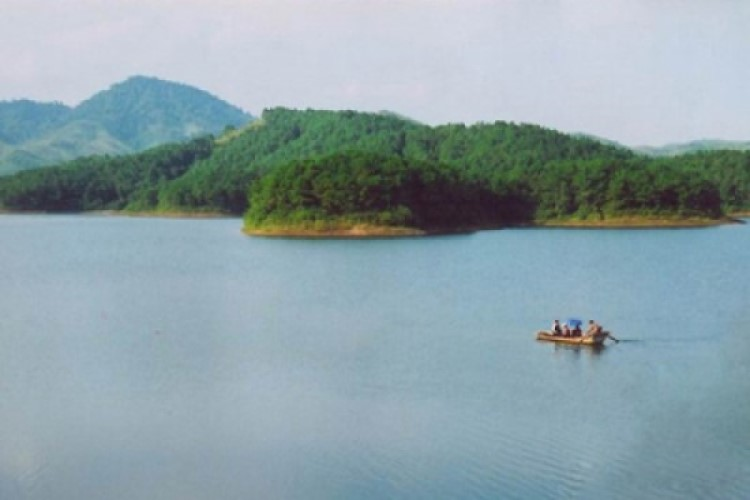

Hồ Cấm Sơn


Mặt hồ xanh biếc phẳng lặng, bao quanh là những dãy núi vươn cao trùng điệp, quyện cùng trời xanh mây trắng, tạo nên cảnh quan rất đỗi hữu tình, thơ mộng. Vẻ đẹp nơi đây đã trở thành nguồn cảm hứng cho nhạc sĩ Phó Đức Phương sáng tác bài ca “Hồ trên núi” dạt dào cảm xúc.Khi tới đây, du khách sẽ có cơ hội ngắm nhìn những dãy núi cao, nhưng hàng cây xanh mướt đang in bóng xuống mặt hồ phẳng lặng, điểm thêm là hàng trăm hòn đảo lớn nhỏ, nhấp nhô giữa mặt hồ tạo cảm giác giống như bạn đang sống trong một Hạ Long thu nhỏ ở mảnh đất Bắc Giang vậy.
Thông tin chi tiết
| Địa chỉ | thuộc địa phận xã Sơn Hải,Hộ Đáp,Tân Sơn và Cấm Sơn,huyện Lục Nam,tỉnh Bắc Giang |
|---|---|
| Giờ mở cửa | 24/24 |
| Phí dịch vụ | Miễn phí |